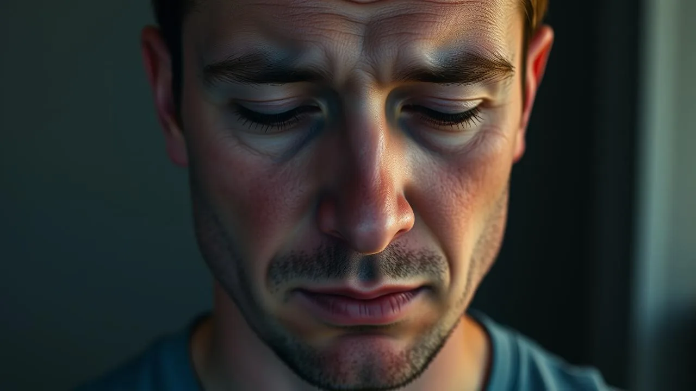

Recognizing signs of mental exhaustion is the first step toward healing yourself before burnout becomes a crisis. You're not lazy, unfocused, or broken if you're experiencing exhaustion right now, you're human, and your brain is telling you it needs rest.
Mental exhaustion doesn't announce itself like the flu. It sneaks up quietly, disguising itself as procrastination, irritability, or just a bad week that never ends. Most people ignore these warning signals until they hit a wall.
The good news? Once you understand what mental exhaustion actually feels like, you can catch it early and take real action to recover. This article shows you exactly what to watch for and how to turn things around.
Mental exhaustion shows up as brain fog, irritability, constant fatigue, loss of motivation, and difficulty concentrating. Recognizing signs of mental exhaustion early helps you recover before full burnout happens. Small daily habits like setting boundaries and taking real breaks can restore your energy.
What Is Mental Exhaustion and How Is It Different From Just Being Tired?
Mental exhaustion is the wearing down of your emotional, cognitive, and psychological resources from prolonged stress, overwork, or emotional labor. It's not the same as physical tiredness that sleep fixes in one night.
Research from the American Psychological Association shows that about 77% of people experience regular stress-related exhaustion at work alone, yet most don't recognize it as a legitimate health issue. Unlike regular fatigue, mental exhaustion lingers even after rest because your mind hasn't actually recovered from the source of stress.
The difference matters because treating mental exhaustion like regular tiredness won't work. You can't just nap it away or drink more coffee. The fix requires addressing the underlying stress and giving your nervous system real recovery time.
- Physical tiredness: fixed by sleep, food, and rest
- Mental exhaustion: requires addressing stress sources, boundaries, and psychological recovery
- Burnout: the advanced stage where mental exhaustion becomes severe and affects all areas of life
Start here: notice whether you feel tired even after 8 hours of sleep. If yes, you're likely experiencing mental exhaustion, not just physical fatigue.

What Are the 7 Most Common Signs of Mental Exhaustion?
The signs of mental exhaustion often appear in clusters, but they usually start with one or two small shifts you might miss. Knowing what to look for helps you catch burnout symptoms mental before they worsen.
Studies show that exhaustion affects cognitive function within weeks of chronic stress, making it harder to think clearly at exactly the moment you need mental sharpness most. These seven signs are the most reliable indicators that your mental resources are depleted:
- Constant brain fog and difficulty concentrating: You read the same email three times and still don't know what it says. Your mind feels cloudy, unfocused, and scattered.
- Emotional numbness or detachment: Things that used to excite you feel flat. You go through motions without feeling connected to your work or relationships.
- Increased irritability and short temper: Small frustrations trigger big reactions. You snap at people you care about over minor things.
- Persistent fatigue that sleep doesn't fix: You wake up already tired. Rest doesn't restore your energy the way it used to.
- Loss of motivation and drive: Even tasks you usually enjoy feel pointless. You struggle to start anything, let alone finish it.
- Physical symptoms without clear cause: Tension headaches, body aches, or stomach issues appear without obvious illness.
- Increased cynicism and negative thinking: Everything feels hopeless. You catastrophize small problems and question your abilities constantly.
Check yourself honestly: which of these three resonate most with you right now? Pick one and name it. Naming it makes it real and actionable.
Why Does Mental Exhaustion Happen and What Causes Burnout?
Mental exhaustion happens when stress and emotional demands exceed your recovery capacity for an extended period. Your mind has a limited fuel tank, and exhaustion occurs when you're running on empty without refilling.
The World Health Organization officially recognizes burnout as a workplace phenomenon involving emotional exhaustion, cynicism, and reduced productivity. Three core factors create this dangerous combination: chronic overwork, lack of control, and misalignment between your values and your job demands.
Understanding the cause helps you fix it instead of just treating symptoms. Most people experiencing exhaustion point to workload, but the real culprit is usually the combination of high demands plus low recovery time plus feeling powerless to change things.
- Chronic stress without adequate breaks or recovery periods
- Perfectionism and unrealistic self-expectations
- Lack of boundaries between work and personal life
- Feeling undervalued or unheard at work or home
- Taking on too many emotional responsibilities
- Lack of support system or feeling isolated
Take five minutes: write down what's actually draining you most. Is it workload, relationships, expectations, or something else? The real cause matters because it guides your recovery.
How Do I Know If I Am Mentally Exhausted Versus Just Stressed?
Stress is temporary and usually tied to a specific event or deadline, once that passes, you recover. Mental exhaustion is the cumulative wear and tear that builds up over months, often from ongoing stress without real rest.
Research distinguishes stress as an acute response and exhaustion as a chronic condition. Stress makes you feel activated and alert (even if uncomfortably). Exhaustion makes you feel empty, flat, and unable to access your normal energy reserves.
Here's the practical distinction: stress makes you work harder and worry more. Exhaustion makes you feel like giving up, even though logically you know you shouldn't. That hopelessness and detachment is the key marker of exhaustion rather than regular stress.
- Stress: temporary response to a challenge, adrenaline flowing, heightened awareness
- Exhaustion: persistent feeling of emptiness, no energy even for things you normally enjoy, emotional numbness
- Burnout: severe exhaustion where you feel cynical, ineffective, and emotionally depleted across all life areas
Real talk: if you felt relief thinking about quitting your job, taking a month off, or disappearing for a while, you're likely already experiencing mental exhaustion, not just stress.
How to Fix Mental Exhaustion and Start Recovering Your Energy Today
Recovery from mental exhaustion requires stopping the damage first, then rebuilding. You can't outwork exhaustion or push through it, you have to address it directly with intentional recovery practices and boundary changes.
Studies on burnout recovery show that most people need 2-6 weeks of genuine rest and stress reduction to start feeling mentally restored, depending on how severe the exhaustion is. Quick fixes like taking a weekend off usually don't work because you return to the same exhausting environment without real change.
The fix involves four layers: removing the stressor where possible, setting boundaries to protect your time and energy, building real recovery practices, and often getting professional support to process what led to exhaustion.
- Name and address the main stressor: Can you reduce workload? Set stricter hours? Have a difficult conversation? Start with whatever you can actually control.
- Build non-negotiable recovery time: Not "rest when you can", actual scheduled time off from screens, work, and responsibilities. Even 30 minutes daily helps.
- Reconnect with activities that fill your cup: Not productive hobbies. Things that make you feel alive, seen, or peaceful. Time in nature, conversations with people you love, creative play.
- Consider professional support: A therapist or counselor helps you process exhaustion and build sustainable patterns. This isn't optional for severe burnout, it's essential.
- Communicate your limits clearly: Stop saying yes to everything. Real recovery requires disappointing some people and protecting your bandwidth.
Start today: pick one boundary you need to set this week. One conversation, one email, or one thing you're going to say no to. Write it down and commit to it.
Learning how to stop overthinking patterns is also important because exhausted brains tend to spiral into worry cycles that drain energy further. Also, knowing how to calm anxiety quickly gives you tools to interrupt the stress cycle when you feel it building.
What Does This Look Like in Real Life?
Sarah was a project manager who prided herself on being reliable and hardworking. For two years, she handled increasing workloads, took on extra projects, and stayed late to make sure everything was perfect. By month 24, she wasn't just tired, she felt hollow. Simple tasks took hours because she couldn't focus. She'd cry in the car, snapped at her partner, and felt zero excitement about anything. She convinced herself she just needed to push harder, but pushing harder only made things worse.
After her doctor ruled out physical illness, Sarah finally admitted something was wrong. She started therapy, set strict work hours, delegated tasks she'd been hoarding, and committed to walking for 20 minutes daily. Within four weeks, brain fog cleared. Within eight weeks, she felt human again. Now, two years later, Sarah recognizes exhaustion's early signs immediately and protects her recovery time fiercely. She's still productive, but she's not burning out.
Related Articles
- → stop overthinking patterns that fuel exhaustion
- → calm anxiety quickly when stress builds
- → stop overthinking at night when exhaustion worsens
- → 5 Reasons Why You Have No Motivation Anymore (And How to Get It Back)
- → 5 Ways to Improve Emotional Resilience After Hard Times
- → 5 Ways to Stop Negative Thinking Patterns Before They Control You
- → 7 Daily Habits for Better Mental Health That Actually Stick
- → 5 Ways to Calm Down When Overwhelmed: Your Emergency Mental Reset
- → 5 Reasons Why You Always Feel Stressed: The Hidden Truth Behind Your Constant Anxiety
- → 5 Ways to Recover From Emotional Burnout: Your Path Back to Yourself
- → 5 Ways to Stop Catastrophic Thinking Before It Controls Your Life
- → 5 Ways to Deal with Stress at Work: Your Daily Escape Plan
- → 5 Reasons Why You Feel Mentally Drained (Even After Rest)
- → 5 Ways to Fall Asleep When Your Mind Won't Stop Racing at Night
- → 5 Reasons Why Anxiety Feels Physical: Your Body's True Story
- → 5 Reasons Why You Feel Emotionally Numb: Your Guide to Feeling Again
- → 5 Ways to Build Mental Toughness and Resilience Starting Today
- → 5 Ways to Stop Self Sabotaging Before Success Slips Away
- → 5 Reasons Why You Feel Lost in Life (And How to Find Your Way Back)
Keep Reading
Frequently Asked Questions
Put this into practice today.
Our free ebook and habit tracker app were built to help you apply what you just read. No cost, no signup required.
Where to Go From Here
You're not weak or broken if you're experiencing signs of mental exhaustion right now. This is what happens when humans push beyond their limits without real recovery. The fact that you're reading this means you're already aware something needs to change, and that awareness is the first real step toward healing.
Recovery isn't about becoming superhuman or learning to handle more stress. It's about respecting your limits, protecting your energy, and building a life where you have actual time to rest and recover. Small changes compound: one boundary set, one recovery habit added, one conversation had about what you actually need.
Today, do one thing. Set one boundary, start one recovery practice, or have one honest conversation about what's actually draining you. You don't have to fix everything today. You just have to start protecting yourself. Your future self will thank you for taking this seriously right now.
Sources & References
This article draws on research from trusted health and wellness organizations. We encourage you to explore the sources directly.
- ▪Anxiety disorders affect 40 million adults in the United States every year - Anxiety & Depression Association of America
- ▪Evidence-based approaches like CBT significantly reduce anxiety and stress symptoms - American Psychological Association
- ▪Regular mindfulness practice reduces symptoms of anxiety and depression - National Institute of Mental Health
- ▪Physical activity improves mental health and reduces symptoms of depression and anxiety - World Health Organization